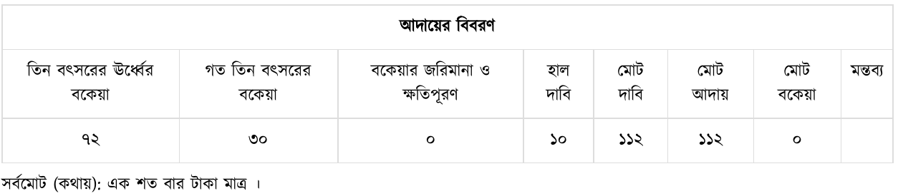

নিজে কাগজ পড়ুন
অন্য একটি দাখিলা পড়ুন
ভূমি উন্নয়ন কর সেবার ১৫ জুলাই ২০২৫-এর দাখিলা থেকে শুধু আদায়ের অংশ। নিজের উত্তরের পক্ষে দুটি ঘর দেখান।

ছবির লেখা পড়ুন
পুরোনো দুই বকেয়া ৭২ ও ৩০। জরিমানা ০। হাল দাবি ১০। মোট দাবি ১১২। মোট আদায় ১১২। মোট বকেয়া ০।
লেখায় অনুশীলন করুন
কত টাকা আদায় হয়েছে? তার মধ্যে শুধু হাল দাবি কত টাকা?
উত্তর দেখুন
আদায় ১১২ টাকা। এর মধ্যে হাল দাবি ১০ টাকা। পুরোনো বকেয়ার দুই ঘরে ৭২ ও ৩০ টাকা। এই সারিতে ৭২ + ৩০ + ১০ = ১১২।
বগুড়ার এক জমি · দলিল থেকে রায়
বগুড়ার উচ্ছেদ মামলা। নিচের তথ্যগুলো হাইকোর্টের দেওয়ানি রিভিশন ১৫৫১/২০০৮ থেকে নেওয়া। দলিল, রসিদ ও নকশার মূল কপি এই ফাইলে নেই।
- জমি চেনা। আরজিতে এস.এ. দাগ ২৮২৫, খতিয়ান ৫৩১। কেনা ০.১৯ একরের ভেতর ০.০১৭৫ একর নিয়ে মামলা। দুটি পরিমাণই শতকে লিখুন। পৃষ্ঠা ১
- দলিল মেলানো। আরজিতে ১০ ফেব্রুয়ারি ১৯৬০-এর ৩৭৪৯ নম্বরকে বিক্রয় দলিল বলা হয়েছিল। প্রদর্শনী ৫-এ আছে ৩০ অক্টোবর ১৯৬১-এর ১৪৫৮৭ নম্বর। পরের দলিলের বয়ানে আগেরটির পরিচয় কী? পৃষ্ঠা ৭
- তারিখ সাজানো। ২৪ মে ১৯৯৭-এর নামজারি, ৮ জুন ২০০১-এর খাজনার রসিদ, ৩০ নভেম্বর ২০০৩-এর মামলা ও ২১ ডিসেম্বর ২০০৩-এর নামজারি পাশাপাশি লিখুন। কার নামে কোন কাগজ? বিবাদীর নামজারির আবেদনের সঙ্গে তাঁর মৌখিক দানের দাবি মেলে কি? পৃষ্ঠা ১০–১১ · পৃষ্ঠা ১৫
এক পাতায় নিজের মত লিখুন। জমির পরিচয়, দুটি কাগজে মিল, একটি অমিল আর যে প্রশ্নটি নকশা ছাড়া মেটে না, প্রতিটির পাশে উৎসের পৃষ্ঠা দিন।
লেখা শেষে মিলিয়ে নিন
এস.এ. দাগ ২৮২৫, খতিয়ান ৫৩১। ১৯ শতকের ভেতর বিরোধ ১.৭৫ শতক নিয়ে। ৩৭৪৯ ছিল বায়না, ১৪৫৮৭ ছিল পরের বিক্রয় দলিল। ১৯৯৭-এর নামজারি ও ২০০১-এর খাজনার রসিদে একই ব্যক্তির নামে ১৯ শতক। বিবাদীর নিজের নামজারি মামলা হওয়ার পরে। তিনি সেখানে নিজেকে ওয়ারিশ বলেছিলেন, আদালতে বলেছিলেন মৌখিক দানের কথা। তাঁর করের রসিদ দিয়ে এই ফারাক মেটে না। বিরোধপূর্ণ অংশের অবস্থান মাঠে দেখাতে মূল তফসিল, সংশ্লিষ্ট জরিপের নকশা ও মাপ দরকার।
নিজের সিদ্ধান্ত লেখার পরে আদালতের সিদ্ধান্ত পড়ুন। পৃষ্ঠা ১৫–১৬
আরেকটি অমিল নিজে ধরুন। ৭৭ নম্বর দলিলের তারিখ দুই পৃষ্ঠা থেকে লিখুন। বছর দুটি আলাদা হলে যাচাই প্রতিবেদনে কী লিখবেন? পৃষ্ঠা ২ · পৃষ্ঠা ৮
সূত্র ধরে পর্যালোচনা দেখুন
২ পৃষ্ঠায় বাদীর বক্তব্যের বিবরণে ২ জানুয়ারি ১৯৯৭। ৮ পৃষ্ঠায় দলিলটির আলোচনায় ২ জানুয়ারি ১৯৭৭। প্রতিবেদনে দুই পাঠ ও পৃষ্ঠা লিখব। কোন বছর সঠিক তা স্থির করতে নিবন্ধন রেকর্ডের সঙ্গে ৭৭ নম্বর দলিলের প্রত্যয়িত নকল মিলিয়ে দেখব।